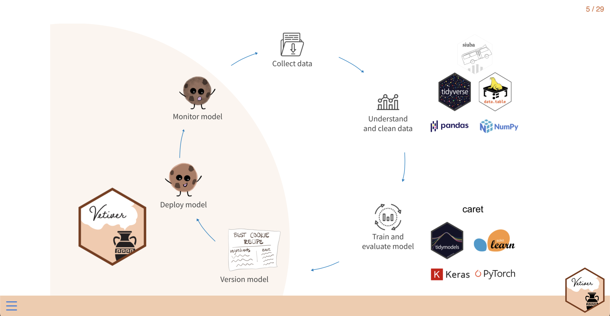

2022-08-08
What a week! Thank you for a fantastic rstudio::conf(2022). It was so exciting to learn and share with you during these eventful four days.
This post will share some of the big announcements from RStudio. We will highlight amazing packages, resources, and processes shared by others during conf in upcoming posts.
RStudio is changing its name to Posit. Our mission is to create free and open source software for data science, scientific research, and technical communication. In the decade since RStudio became a company, we’ve learned much about creating a sustainable and organic model for open-source software.
We also want to impact the practice of science more broadly. For years, RStudio has made R more approachable and usable for millions of users. More recently, we’ve also worked on open source tools for other programming languages, such as reticulate, Quarto, vetiver, and Shiny for Python.
We are not changing our name because we are changing what we are doing. We are changing our name to reflect what we are already doing. We have been working multilingual for many years. Now, we want to announce that to the world. — Hadley Wickham, Chief Scientist
Our new name tells our multilingual story and reflects our ambitions to make scientific communication better for everyone. With Posit, we’re excited to share what we love about R and RStudio with the wider world.
Read more in J.J. Allaire and Hadley Wickham’s blog post. RStudio will officially rebrand as Posit in October 2022. Until then, we will continue to do business as RStudio.
Quarto is a new open-source scientific and technical publishing system that works with R, Python, Julia, Javascript, and many other languages. While R Markdown is fundamentally tied to R, the goal of Quarto is to bring the power and flexibility of R Markdown to everyone. Crucially, Quarto enables Python users who prefer to write code in Jupyter Notebooks or VS Code to enjoy the benefits that R Markdown has brought to R users for years.
With Quarto, you can make websites, books, blogs, and more. The User Guide is a resource with detailed walkthroughs of Quarto’s functionality. Check out the Gallery to see examples of what’s possible.
Read more in J.J. Allaire’s blog post and join us on August 9th for Tom Mock’s Welcome to Quarto workshop.
🎂 Happy 10th birthday, Shiny!
Shiny is a framework for building interactive web applications without knowing CSS, HTML, and Javascript. Released ten years ago, it is a powerful tool used across many contexts and industries. R programmers use Shiny to track COVID cases in California and teach linear regression. There are conferences dedicated to Shiny, such as Appsilon’s Shiny Conference earlier this year to Jumping River’s Shiny in Production event in October. As stated in Mastering Shiny by Hadley Wickham, “Shiny gives you the ability to pass on some of your R superpowers to anyone who can use the web.”
Presenters at this year’s rstudio::conf unveiled new, exciting developments for Shiny, expanding these superpowers to a larger audience.
In his keynote speech, Joe Cheng announced Shiny for Python. Python programmers can now try out Shiny’s approachable, reactive framework to create interactive web apps.
Currently in alpha, many resources exist for those interested in trying Shiny for Python. The Shiny for Python website provides API documents, examples, and articles. VS Code users can download the Shiny for Python extension to write and preview apps in the editor. Deployment options include RStudio Connect, shinyapps.io, Shiny Server Open Source, and static web servers.
Check out the Shiny for Python YouTube playlist to see it in action.
Barret Schloerke presented shinytest2, a new package on CRAN that leverages the testthat library for Shiny. Shinytest2 provides regression testing for Shiny applications: users can check existing behavior for consistency over time. Written entirely in R, shinytest2 is a streamlined toolkit for unit testing Shiny applications.
Explore the shinytest2 YouTube playlist to get started.
Nick Strayer demonstrated two tools for easier, faster development of Shiny apps:
Now, it’s easier than ever for anyone to get started designing Shiny user interfaces, even without detailed knowledge of Shiny’s UI functions or HTML layout.
Watch a tour of Shiny UI Editor and a project walking through how to use the editor.
Winston Chang showed how to run “ShinyLive” — Shiny for Python without a server. The application runs on the client with no computational load on the server. This is possible because Python can be compiled to WebAssembly (Wasm), a binary format that can run in the browser. With ShinyLive, you can share Shiny apps with just a URL or deploy them to a static web hosting service.
Winston walks through a Beginner’s Guide to ShinyLive on YouTube. See some ShinyLive examples on the Shiny for Python website.
tidymodels is a collection of R packages for modeling and machine learning using tidyverse principles. It provides users with a consistent, modular, and extensible framework for working with models in R. During their keynote, Julia Silge and Max Kuhn shared how tidymodels helps create ergonomic, effective, and safe code (and announced their new book, Tidy Modeling with R!).
The tidymodels team also demonstrated several new packages during conf, extending the framework to more areas and applications.
Machine learning operations, or MLOps, is a set of practices to deploy and maintain machine learning in production reliably and efficiently. Isabel Zimmerman presented how the new vetiver framework provides fluent tooling for MLOps in R and Python.

Survival analysis is a statistical procedure for data analysis where the outcome variable of interest is time until an event occurs. Hannah Frick showcased the censored package, a parsnip extension that provides support for survival analysis in tidymodels. The package offers several models, engines, and prediction types for users.
Unsupervised learning learns patterns and provides insight from untagged data. Emil Hvitfeldt unveiled the tidyclust package, a reimplementation of tidymodels for clustering models. Users can use the tidy, unified tidymodels framework for unsupervised learning algorithms like k-means clustering.
Follow the tidyverse blog to receive the quarterly tidymodels digest.
We have so much more to come. Stay in touch: